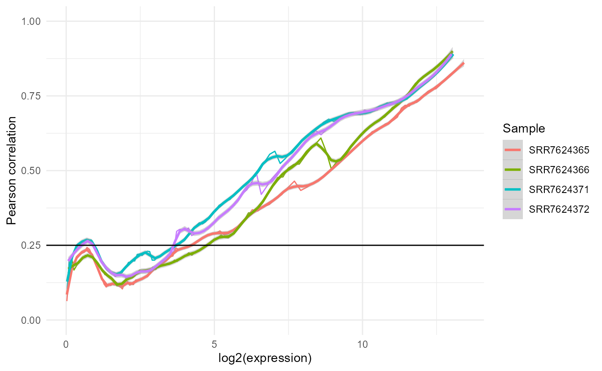

vignettes/vignette_noisyr_counts.Rmd
vignette_noisyr_counts.RmdThe noisyR package is an end-to-end pipeline for quantifying and removing technical noise from HTS datasets. The three main pipeline steps are:
Each step can be finely tuned using hyperparameters; optimal, data-driven values for these parameters are also determined.
The package and some applications are described in more detail in this paper and is actively maintained on https://github.com/Core-Bioinformatics/noisyR.
The count matrix approach uses the original, un-normalised count matrix, as provided after alignment and feature quantification; each sample is processed individually, only the relative expressions across samples are compared. Relying on the hypothesis that the majority of genes are not DE, most of the evaluations are expected to point towards a high similarity across samples.
To install the package, first install all bioconductor dependencies:
packages.bioc <- c("preprocessCore",
"IRanges",
"GenomicRanges",
"Rsamtools")
new.packages.bioc <- packages.bioc[!(packages.bioc %in% installed.packages()[,"Package"])]
if(length(new.packages.bioc)){
if (!requireNamespace("BiocManager", quietly = TRUE))
install.packages("BiocManager")
BiocManager::install(new.packages.bioc)
}Then, you can install noisyR (and all its other dependencies) from CRAN:
install.packages("noisyr")To install the latest stable version from GitHub, first install CRAN dependencies:
packages.cran <- c("utils",
"grDevices",
"tibble",
"dplyr",
"magrittr",
"ggplot2",
"philentropy",
"doParallel",
"foreach")
new.packages.cran <- packages.cran[!(packages.cran %in% installed.packages()[,"Package"])]
if(length(new.packages.cran))
install.packages(new.packages.cran)
if (!requireNamespace("devtools", quietly = TRUE))
install.packages("devtools")
devtools::install_github("Core-Bioinformatics/noisyR")First, load noisyR:
For this demonstration we will be using a subset of the count matrix for an experiment included in a 2019 paper by Yang et al. Rows represent genes/features and columns represent samples:
counts.in <- system.file("extdata", "counts_raw.csv", package = "noisyr")
df <- read.csv(counts.in, row.names = 1)
str(df)
#> 'data.frame': 55573 obs. of 4 variables:
#> $ SRR7624365: int 2 0 6 0 0 0 0 0 0 0 ...
#> $ SRR7624366: int 0 0 4 0 0 0 0 0 0 0 ...
#> $ SRR7624371: int 0 0 2 0 2 0 0 0 0 0 ...
#> $ SRR7624372: int 0 0 0 0 0 2 0 0 0 0 ...
head(df)
#> SRR7624365 SRR7624366 SRR7624371 SRR7624372
#> ENSMUSG00000102693 2 0 0 0
#> ENSMUSG00000064842 0 0 0 0
#> ENSMUSG00000051951 6 4 2 0
#> ENSMUSG00000102851 0 0 0 0
#> ENSMUSG00000103377 0 0 2 0
#> ENSMUSG00000104017 0 0 0 2Note that when reading from a file R typically returns a data frame. To convert to a matrix we use the function cast_matrix_to_numeric(). This also converts values to numeric (in case they were read as characters). Any values that are not coercible to numeric are replaced by 0.
expression.matrix <- noisyr::cast_matrix_to_numeric(df)The full noisyR pipeline can be run through noisyr(), choosing “counts” for the count matrix approach (internally calls noisyr_counts()). The user can pass many arguments to this function, which alter the behaviour of the different pipeline steps, as discussed in the breakdown below.
expression.matrix.denoised.standard <- noisyr::noisyr(
approach_for_similarity_calculation = "counts",
expression.matrix = df
)
#> >>> noisyR counts approach pipeline <<<
#> The input matrix has 55573 rows and 4 cols
#> number of genes: 55573
#> number of samples: 4
#> Calculating the number of elements per window
#> the number of elements per window is 5557
#> the step size is 277
#> the selected similarity metric is correlation_pearson
#> Working with sample 1
#> Working with sample 2
#> Working with sample 3
#> Working with sample 4
#> Calculating noise thresholds for 4 samples...
#> similarity.threshold = 0.25
#> method.chosen = Boxplot-IQR
#> Denoising expression matrix...
#> removing noisy genes
#> adjusting matrix
#> >>> Done! <<<The output of the noise removal is a denoised matrix that can be passed on to other methods for downstream analysis.
head(expression.matrix.denoised.standard)
#> SRR7624365 SRR7624366 SRR7624371 SRR7624372
#> ENSMUSG00000025902 94 74 32 44
#> ENSMUSG00000102269 24 48 20 26
#> ENSMUSG00000098104 76 68 62 60
#> ENSMUSG00000103922 326 273 318 365
#> ENSMUSG00000033845 14451 9925 14702 14549
#> ENSMUSG00000102275 117 100 142 124
apply(expression.matrix.denoised.standard, 2, min)
#> SRR7624365 SRR7624366 SRR7624371 SRR7624372
#> 18 18 18 18While for most applications, running noisyr() is sufficient, it may be useful to run individual pipeline steps manually. For example, the user may want to create summary figures for the denoising, store the noise thresholds obtained or other intermediary outputs, or try out different options without rerunning all steps. In this section, we look deeper into noisyr() and break down the three main steps that are performed.
We can then run the similarity calculation using calculate_expression_similarity_counts():
expression.summary <- noisyr::calculate_expression_similarity_counts(
expression.matrix = expression.matrix,
similarity.measure = "correlation_pearson"
)
#> The input matrix has 55573 rows and 4 cols
#> number of genes: 55573
#> number of samples: 4
#> Calculating the number of elements per window
#> the number of elements per window is 5557
#> the step size is 277
#> the selected similarity metric is correlation_pearson
#> Working with sample 1
#> Working with sample 2
#> Working with sample 3
#> Working with sample 4
str(expression.summary)
#> List of 3
#> $ expression.matrix : num [1:55573, 1:4] 2 0 6 0 0 0 0 0 0 0 ...
#> ..- attr(*, "dimnames")=List of 2
#> .. ..$ : chr [1:55573] "ENSMUSG00000102693" "ENSMUSG00000064842" "ENSMUSG00000051951" "ENSMUSG00000102851" ...
#> .. ..$ : chr [1:4] "SRR7624365" "SRR7624366" "SRR7624371" "SRR7624372"
#> $ expression.levels : num [1:181, 1:4] 0 0 0 0 0 0 0 0 0 0 ...
#> $ expression.levels.similarity: num [1:181, 1:4] NA NA NA NA NA NA NA NA NA NA ...Users can select a similarity measure to assess the localised consistency in expression across samples (dissimilarity measures are inverted). See the philentropy package documentation for more information on the different distances. The full list of available metrics can be viewed by:
noisyr::get_methods_correlation_distance()
#> [1] "correlation_pearson" "correlation_kendall"
#> [3] "correlation_spearman" "distance_euclidean"
#> [5] "distance_manhattan" "distance_minkowski"
#> [7] "distance_chebyshev" "distance_sorensen"
#> [9] "distance_gower" "distance_soergel"
#> [11] "distance_kulczynski_d" "distance_canberra"
#> [13] "distance_lorentzian" "distance_intersection"
#> [15] "distance_non-intersection" "distance_wavehedges"
#> [17] "distance_czekanowski" "distance_motyka"
#> [19] "distance_kulczynski_s" "distance_tanimoto"
#> [21] "distance_ruzicka" "distance_inner_product"
#> [23] "distance_harmonic_mean" "distance_cosine"
#> [25] "distance_hassebrook" "distance_jaccard"
#> [27] "distance_dice" "distance_fidelity"
#> [29] "distance_bhattacharyya" "distance_hellinger"
#> [31] "distance_matusita" "distance_squared_chord"
#> [33] "distance_squared_euclidean" "distance_pearson"
#> [35] "distance_neyman" "distance_squared_chi"
#> [37] "distance_prob_symm" "distance_divergence"
#> [39] "distance_clark" "distance_additive_symm"
#> [41] "distance_kullback-leibler" "distance_jeffreys"
#> [43] "distance_k_divergence" "distance_topsoe"
#> [45] "distance_jensen-shannon" "distance_jensen_difference"
#> [47] "distance_taneja" "distance_kumar-johnson"
#> [49] "distance_avg"By default, the window length is 10% of the number of rows in the matrix, as it has proven effective empirically. A different window can be specified by the n.elements.per.window parameter. The optimal window length can also be estimated by seeking stability of output (but this can be computationally intensive for large datasets):
noisyr::optimise_window_length(
expression.matrix = expression.matrix,
similarity.measure = "correlation_pearson"
)
#> Window length optimisation
#> number of windows: 33
#> minimum window: 555
#> maximum window: 18339
#> window step: 555
#> # of iterations: 50
#> minimum similar windows: 3
#> Calculating expression summary and JSE for each window...
#> Performing t-tests...
#> The number of similar windows found for each window (including itself) were:
#> 1 1 1 1 1 2 2 2 2 2 2 3 3 4 2 2 4 4 4 4 4 4 2 5 2 2 2 4 3 4 3 1 2
#> Optimal window found!
#> [1] 6660Window length optimisation can be turned on using the optimise.window.length.logical parameter in noisyr() or noisyr_counts().
Plots of the abundance-correlation relation can be generated through the plot_expression_similarity() function:
plotlist <- noisyr::plot_expression_similarity(
expression.summary = expression.summary)
plotlist[[1]]As expected, we observe low correlation values for low abundances and a steady increase towards 1 as the abundance increases. This is based on the expectation that most genes are not differentially expressed and have consistent expression, but at low abundances the stochastic nature of transcription and sequencing gives rise to noise. The local maximum at very low abundances is due to strings of zeros driving the correlation higher than expected.
These are ggplot objects, and can thus be modified and combined intuitively. For example, plotting all the line plots together:
plotdf.line <- tibble::tibble()
for(i in 1:4){
lineid <- i * 2 - 1
plotdf.line <- rbind(
plotdf.line,
dplyr::mutate(plotlist[[lineid]]$data,
Sample=colnames(expression.matrix)[i]))
}
ggplot2::ggplot(plotdf.line) +
ggplot2::theme_minimal() +
ggplot2::geom_line(ggplot2::aes(x=x, y=y, colour=Sample)) +
ggplot2::geom_smooth(ggplot2::aes(x,y,colour=Sample), method="loess",
formula= y ~ x, span=0.1) +
ggplot2::ylim(0:1) +
ggplot2::xlab("log2(expression)") +
ggplot2::ylab("Pearson correlation") +
ggplot2::geom_hline(yintercept=0.25, color="black")
Using the output of the similarity calculation, we can compute the signal to noise threshold in each sample:
noise.thresholds <- noisyr::calculate_noise_threshold_base(expression = expression.summary)
#> Calculating noise thresholds for 4 samples...
#> similarity.threshold = 0.25
#> method.chosen = Boxplot-IQR
noise.thresholds
#> [1] 19.69831 25.99208 12.12573 12.99604Here we used the default parameters: a similarity threshold of 0.25 and the Boxplot-IQR method. There are several methods available, which can be viewed with the get_methods_calculate_noise_threshold() function:
noisyr::get_methods_calculate_noise_threshold()
#> [1] "Density_based-No_normalisation"
#> [2] "Density_based-RPM_normalisation"
#> [3] "Density_based-Quantile_normalisation"
#> [4] "Line_plot-No_smoothing"
#> [5] "Line_plot-loess10_smoothing"
#> [6] "Line_plot-loess25_smoothing"
#> [7] "Line_plot-loess50_smoothing"
#> [8] "Boxplot-Median"
#> [9] "Boxplot-IQR"
#> [10] "Boxplot-Quant5"The first three methods are just calculating the minimum of the density plot for all genes (a common, fast approach). This usually provides a rough, overestimated signal to noise threshold.
The rest of the methods use either the (smoothed) line plot or the boxplot to find the noise threshold given a similarity (correlation/distance) threshold.
It is recommended that the method with the least coefficient of variation across all samples is chosen for noise removal. This can also be applied to compute the correlation/distance threshold instead of supplying it manually, which is especially useful for non-correlation measures which don’t have a standard range.
For example, by looking to minimise the coefficient of variation, we get a correlation threshold of 0.21 and the loess10 smoothing method for this dataset:
similarity.threshold.sequence <- seq(0.2, 0.3, by=0.01)
stats.table <- noisyr::calculate_noise_threshold_method_statistics(
expression = expression.summary,
similarity.threshold.sequence = similarity.threshold.sequence
)
row.min.coef.var <- which.min(stats.table$noise.threshold.coefficient.of.variation)
# adjust column names for printing
colnames(stats.table) <- c("approach", "method", "corr.thr", "min", "mean", "coef.var", "max", "all")
stats.table[row.min.coef.var, 1:7]
#> # A tibble: 1 x 7
#> approach method corr.thr min mean coef.var max
#> <chr> <chr> <dbl> <dbl> <dbl> <dbl> <dbl>
#> 1 Line_plot loess10_smoothing 0.21 7.37 9.88 0.253 13.3
dplyr::filter(stats.table, round(corr.thr, 2) == 0.21)[, 1:7]
#> # A tibble: 10 x 7
#> approach method corr.thr min mean coef.var max
#> <chr> <chr> <dbl> <dbl> <dbl> <dbl> <dbl>
#> 1 Density_based No_normalisation 0.21 308 308 NA 308
#> 2 Density_based RPM_normalisation 0.21 290 290 NA 290
#> 3 Density_based Quantile_normalisation 0.21 304 304 NA 304
#> 4 Line_plot No_smoothing 0.21 0 0 NaN 0
#> 5 Line_plot loess10_smoothing 0.21 7.37 9.88 0.253 13.3
#> 6 Line_plot loess25_smoothing 0.21 4.26 9.20 0.450 14.3
#> 7 Line_plot loess50_smoothing 0.21 6.47 9.92 0.336 14.3
#> 8 Boxplot Median 0.21 8.57 11.6 0.271 16
#> 9 Boxplot IQR 0.21 8.57 11.6 0.271 16
#> 10 Boxplot Quant5 0.21 8.57 11.6 0.271 16
dplyr::filter(stats.table, method == "loess10_smoothing")[, 1:7]
#> # A tibble: 11 x 7
#> approach method corr.thr min mean coef.var max
#> <chr> <chr> <dbl> <dbl> <dbl> <dbl> <dbl>
#> 1 Line_plot loess10_smoothing 0.2 3.72 8.42 0.425 12.4
#> 2 Line_plot loess10_smoothing 0.21 7.37 9.88 0.253 13.3
#> 3 Line_plot loess10_smoothing 0.22 8.42 11.3 0.321 16.6
#> 4 Line_plot loess10_smoothing 0.23 9.02 12.7 0.358 19.3
#> 5 Line_plot loess10_smoothing 0.24 10.4 14.3 0.395 22.5
#> 6 Line_plot loess10_smoothing 0.25 10.6 16.1 0.388 24.3
#> 7 Line_plot loess10_smoothing 0.26 11.4 17.9 0.433 28.4
#> 8 Line_plot loess10_smoothing 0.27 11.4 19.4 0.439 30.8
#> 9 Line_plot loess10_smoothing 0.28 12.2 24.0 0.578 43.3
#> 10 Line_plot loess10_smoothing 0.29 15.9 28.0 0.505 47.4
#> 11 Line_plot loess10_smoothing 0.3 17.1 35.4 0.486 52.0We can then call calculate_noise_threshold_base() with our optimised parameters:
noise.thresholds <- noisyr::calculate_noise_threshold_base(
expression = expression.summary,
similarity.threshold = 0.21,
method.chosen = "Line_plot-loess10_smoothing"
)
#> Calculating noise thresholds for 4 samples...
#> similarity.threshold = 0.21
#> method.chosen = Line_plot-loess10_smoothing
noise.thresholds
#> [1] 9.664027 13.325175 7.368364 9.171495Noise removal parameter optimisation can be turned on using the minimise.coefficient.of.variation parameter in noisyr() or noisyr_counts() and passing further parameters for similarity.threshold.sequence and/or method.chosen.sequence.
To produce the denoised count matrix, the function remove_noise_from_matrix() is used with a specified vector of noise thresholds (usually calculated by calculate_noise_threshold_base()).
expression.matrix.denoised <- noisyr::remove_noise_from_matrix(
expression.matrix = expression.matrix,
noise.thresholds = noise.thresholds)
#> Denoising expression matrix...
#> removing noisy genes
#> adjusting matrix
str(expression.matrix.denoised)
#> num [1:24341, 1:4] 17 86 16 68 318 ...
#> - attr(*, "dimnames")=List of 2
#> ..$ : chr [1:24341] "ENSMUSG00000102343" "ENSMUSG00000025902" "ENSMUSG00000102269" "ENSMUSG00000098104" ...
#> ..$ : chr [1:4] "SRR7624365" "SRR7624366" "SRR7624371" "SRR7624372"The behaviour of remove_noise_from_matrix() can be further modified:
Because of these defaults, passing the mean of the thresholds gives a slightly different result (different # of genes fully under the noise threshold:
expression.matrix.denoised.fixed <- noisyr::remove_noise_from_matrix(
expression.matrix = expression.matrix,
noise.thresholds = mean(noise.thresholds))
#> noise.thresholds only has 1 value, using a fixed threshold...
#> Denoising expression matrix...
#> removing noisy genes
#> adjusting matrix
nrow(expression.matrix.denoised); nrow(expression.matrix.denoised.fixed)
#> [1] 24341
#> [1] 24309By supplying the corresponding parameters to noisyr(), we obtain the same final result from the full pipeline:
expression.matrix.denoised.full_pipeline <- noisyr::noisyr(
approach_for_similarity_calculation = "counts",
expression.matrix = expression.matrix,
similarity.measure = "correlation_pearson",
optimise.window.length.logical = FALSE,
minimise.coefficient.of.variation = TRUE,
similarity.threshold.sequence = seq(0.2, 0.3, by=0.01)
)
#> >>> noisyR counts approach pipeline <<<
#> The input matrix has 55573 rows and 4 cols
#> number of genes: 55573
#> number of samples: 4
#> Calculating the number of elements per window
#> the number of elements per window is 5557
#> the step size is 277
#> the selected similarity metric is correlation_pearson
#> Working with sample 1
#> Working with sample 2
#> Working with sample 3
#> Working with sample 4
#> Selecting parameters that minimise the coefficient of variation...
#> Calculating noise thresholds for 4 samples...
#> similarity.threshold = 0.21
#> method.chosen = Line_plot-loess10_smoothing
#> Denoising expression matrix...
#> removing noisy genes
#> adjusting matrix
#> >>> Done! <<<
identical(expression.matrix.denoised,
expression.matrix.denoised.full_pipeline)
#> [1] TRUEThe denoised matrix can be used instead of the raw count matrix for downstream analysis. Here we present a simple example of a differential expression (DE) analysis and compare the two.
We create a function to perform the same DE pipeline on both matrices, using the edgeR package.
DE_edgeR = function(expression.matrix, metadata){
# load or install edgeR
if(!require(edgeR)){
if (!requireNamespace("BiocManager", quietly = TRUE))
install.packages("BiocManager")
BiocManager::install("edgeR")
}
# create metadata
metadata <- data.frame(id = colnames(expression.matrix),
timepoint = c("0h", "0h", "12h", "12h"))
# quantile normalise
expression.matrix.normalised <- preprocessCore::normalize.quantiles(expression.matrix)
rownames(expression.matrix.normalised) <- base::rownames(expression.matrix)
colnames(expression.matrix.normalised) <- base::colnames(expression.matrix)
# process using edgeR
expression.matrix.for.de <- round(expression.matrix.normalised)
expression.matrix.for.de <-
expression.matrix.for.de[apply(expression.matrix.for.de, 1, sum) > 0, ]
design <- model.matrix(~ 0 + metadata$timepoint)
edger <- DGEList(counts = expression.matrix.for.de)
edger <- estimateDisp(edger, design)
edger.fit <- glmFit(edger, design)
edger.lrt <- glmLRT(edger.fit, contrast=c(-1, 1))
# extract results
res <- topTags(edger.lrt, n = Inf)$table
res$DE <- res$FDR < 0.05 & abs(res$logFC) > 1
# make volcano plot
print(
ggplot2::ggplot(res) +
ggplot2::theme_minimal() +
ggplot2::geom_point(ggplot2::aes(x=logFC, y=-log10(FDR), color=DE), show.legend=FALSE) +
ggplot2::scale_color_manual(values=c("black", "red")) +
ggplot2::lims(x=c(-12, 12), y=c(0, 120))
)
return(res)
}
results.raw <- DE_edgeR(expression.matrix)
results.denoised <- DE_edgeR(expression.matrix.denoised)We observe the distribution of genes in the volcano plots becoming a lot tighter for the denoised matrix. For the raw matrix, there are a lot of genes with low p-values and high log-fold changes that are barely called DE. Those “whiskers” are corrected for the denoised matrix.
We can also see the number of differentially expressed genes has been reduced: